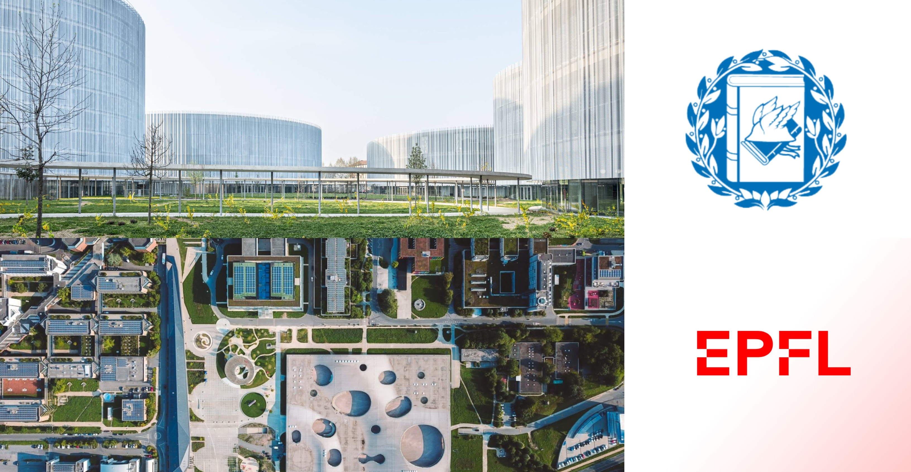

About
Hi there! My name is Emma - I’m 22 years old and currently pursuing a Master’s in Data Science at École Polytechnique Fédérale de Lausanne (EPFL).
I’m interested in machine learning, optimization, computer vision, statistical physics, and the application of deep learning in medicine - both from a research and engineering perspective.
I enjoy exploring the mathematical foundations behind intelligent systems and translating those ideas into practice.
In my free time, I enjoy hiking, running, playing tennis and reading crime novels.
Feel free to reach out if you're interested in collaborating on a project, discussing research ideas, or just want to chat!
Education

École Polytechnique Fédérale de Lausanne (EPFL)
MSc in Data Science
Lausanne, Switzerland | 2025–2027 (incoming)
Università Bocconi
BSc in Mathematical and Computing Sciences for Artificial Intelligence
Milan, Italy | 2022–2025
Grade : 109/110
Thesis: Optimization for Non-Convex Problems: A Study of Simulated Annealing and Gradient-Based Methods (Grade : 4/4)
Relevant Courses: Advanced Mathematical Analysis, Algebra, Advanced Programming and Optimization, Algorithms and Data Structures, Probability, Mathematical Statistics, Stochastic Processes, Machine Learning and AI, Statistical and Quantum Physics
Nanyang Technological University (NTU)
Exchange Semester in Mathematics and Computer Science
Singapore | Jan–May 2025
GPA: 4.89/5.00
Work
INSAIT – Undergraduate Research Intern (Jun–Aug 2024)
- Selected from a competitive pool of applicants with < 3% admission rate .
- Worked on adapting the LLM-as-a-Judge framework to low-resource languages like Bulgarian. Research included experiments on
position bias, weaknesses and strengths of LLMs as evaluators, as well as developing pipelines for dataset filtering and model
evaluation, later used for assessing INSAIT’s BgGPT model. Supervised by Dimitar Iliev Dimitrov, Anton Alexandrov, Jasper
Dekoninck, and Prof. Martin Vechev.
Entra Energy - Data Science Intern (Jul-Sept 2023)
- Conducted Time Series Forecasting and data analysis using Python and the ENTSOE API to gain insights into electricity consumption, load forecasting, and generation capacity for informed decision-making at an energy company. .
- Improved forecasting accuracy by incorporating additional parameters and ensured data integrity through error handling mechanisms
Experian – Summer Practice Participant - Data Analytics (Jul 2023)
- Developed a financial model to estimate credit risk using real data. Completed a comprehensive training program covering credit scoring, modeling, data evaluation, and analysis.
- Worked on key modeling stages for a standard application scorecard, including calibration, validation, and cut-off strategies.
Projects

TO DO
Contact